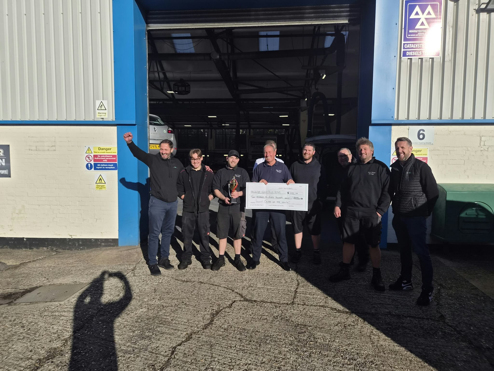
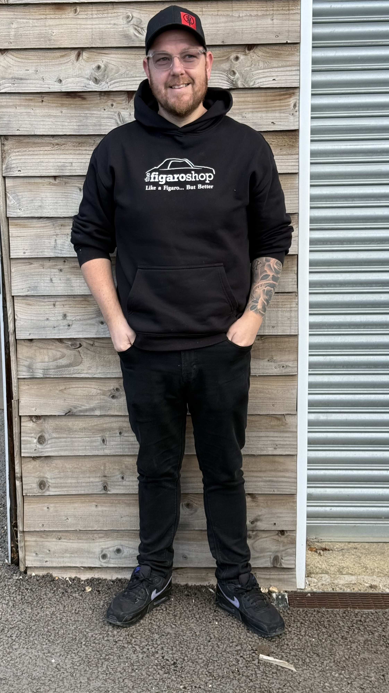
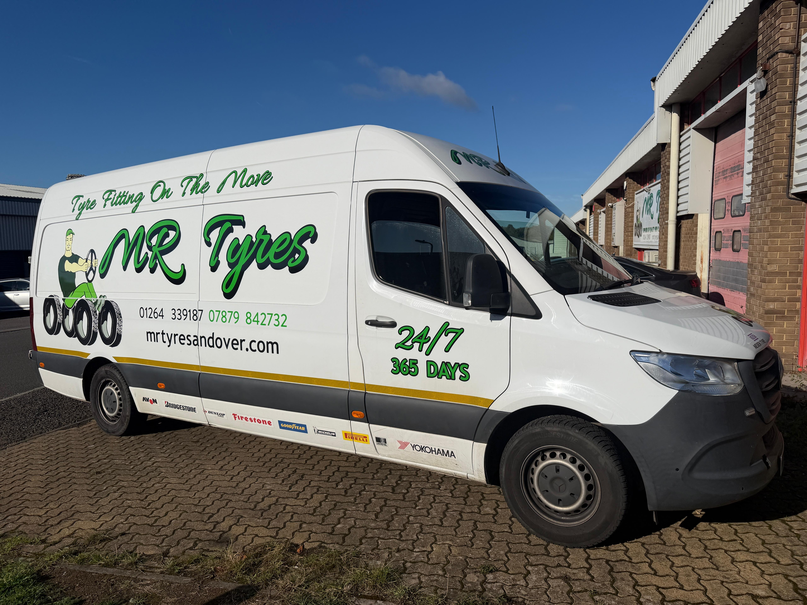
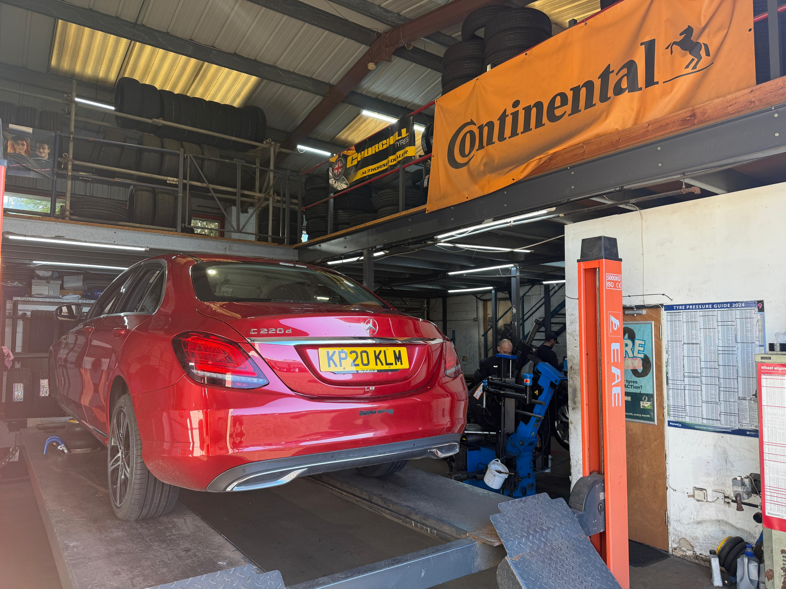
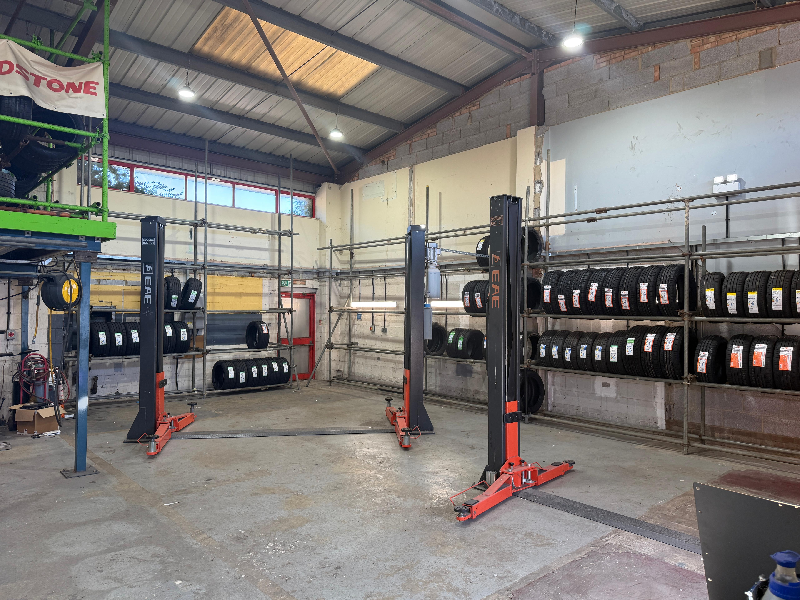
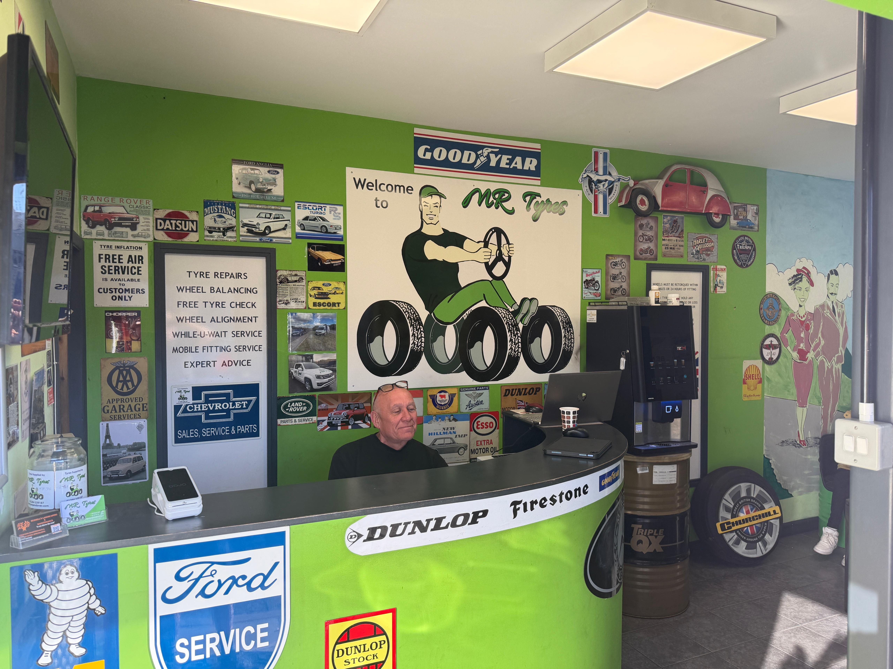

Hi everyone,
This month has been very exciting for the company, and we are making great strides forward.
Firstly, we have introduced new Master Manager positions. These roles are key to supporting the company through its next stage of growth. A Master Manager looks after their own site while also supporting teammates at other local sites.
This industry and this business have taken me a long way in life, as they have for many of us. We are passionate about building an organisation that gives teammates the opportunity to learn and do more. As our Master Managers move up, they create opportunities for others to step into their roles. Whether you are looking to move into a new role or not, I hope these changes will benefit you in your work.
I was very impressed by the interviews I sat in on and enjoyed learning more about our teams. A huge congratulations to Christian and Chris on their appointments on 1st October. I am also really pleased to see others starting a training programme to prepare for future Master Manager roles.
Secondly, Blue Peter Garage won the Monthly Performance Trophy. They received fantastic customer feedback and finished nearly 30% above their financial target, earning the team the £250 cheque.
This is such an impressive achievement, given that they only joined the group a couple of months ago. Even with the changes and disruption of new systems and teammates, they were able to get on track quickly. When I asked how they had done so well, they told me it was all about having a great team and culture.
Finally, MR Tyres in Andover joined the group, and we are delighted to welcome the team on board. Now our 13th site. The team have done a great job so far and have taken the new systems and processes in their stride. We are excited to keep improving the business together while also learning from their vast tyre experience. I've shared some pictures below.
It has been an exciting period, and as we move into autumn, I wish you all well and sincerely thank you for the amazing work you do for our customers. I know how much they appreciate you too.
Best,
Tobyn
Blue Peter Garage Trophy Winners

Our New Master Managers


Mr Tyres Andover



